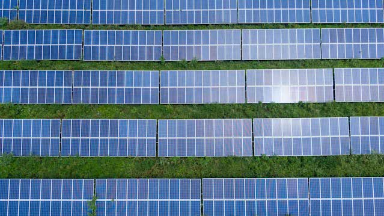

Solar Energy
Harnessing the power of the sun, solar energy is a quintessential example of clean, renewable power. Photovoltaic cells, commonly known as solar panels, convert sunlight directly into electricity. This process is not only silent but also produces no greenhouse gas emissions, making it an environmentally friendly alternative to fossil fuels. The scalability of solar installations ranges from small residential setups to vast solar farms, capable of powering entire communities.
The potential of solar energy is immense, particularly in regions with high solar irradiance. Advances in technology have led to more efficient solar cells and reduced costs, making solar energy increasingly accessible. Moreover, innovations like floating solar panels are opening new avenues for energy production without occupying valuable land resources. Solar energy’s versatility and sustainability make it a pivotal component in the transition towards a cleaner energy future.